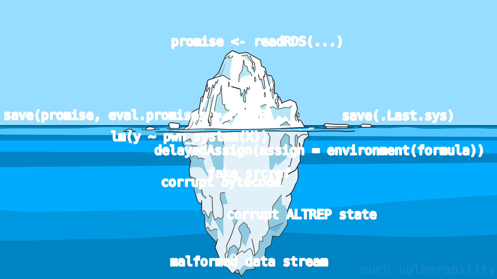

...but shouldn't be afraid to ask
Recently, a lot of sources who ought to know better, including major news outlets, have been saying that an arbitrary code execution vulnerability has been patched in R-4.4.0, so everyone should upgrade to be safe from it. They are wrong on all three counts: this is R working as designed, not a vulnerability; the patch barely changes the behaviour but keeps similar attacks possible; and upgrading to R-4.4.0 will not save you from anything except very specific kinds of attack that haven't been observed in the wild.
In fact, CVE-2024-27322 is just the tip of the iceberg. There are many possible ways to cause code execution using a serialized R data stream, and most of them will not go away without breaking fundamental parts of R itself:
Thanks to Openclipart for the iceberg.
Read on for exposition, or skip to plain old data to find out how to protect yourself.
Ad break! My good friend Kate (MSc in molecular biology, R-basics and Python-curious) is looking for a job in EU or UK (currently based in Jena, DE). Feel free to serialize her an e-mail!
Timeō Danaōs et dōna *.rds
The crux of the matter is that the *.rds and *.RData files that we so conveniently produce and consume using save(), load(), saveRDS(), and readRDS() directly represent internal state of R objects. The code processing these objects has no other option but to trust this state. When you load an object, there is no other source of truth about its contents except the file.
The other part of the problem is that this internal state of R objects regularly contains executable code. For example, a model object will most likely contain an executable expression that accesses the data frame with the variables and produces a model matrix for the linear algebra library to perform linear least squares with. An attacker who wants to take over your computer using a serialized R file needn't bother with promises. It is much easier to replace the model expression with pwn_your_machine() and send the model to you to "test".
What's worse, the above was just one example of "trusting internal state". With the power to create variables with arbitrary contents, the possibilities are endless. How about ALTREP objects confused about their internal state, so that they would overwrite arbitrary process memory, thinking it belongs to them? How about functions that look benign because they have nice source references and a completely inoffensive body, but wreak havoc on your computer when executed (because their bytecode is grafted from pwn_your_machine())?
We cannot even completely get rid of promises in serialized data streams. R uses lazy evaluation for function arguments: what this means that every function argument is a promise that is not evaluated until the function asks for it. These promises may be captured by closures (which happens when a function creates and returns another function), and functions may be serialized and stored together with their promises. Evaluate the promises on serialization, and you break the semantics of lazily-evaluated function arguments. Function arguments that were meant for non-standard evaluation suddenly get forced; side effects happen when they weren't expected to.
Anatomy of a vulnerability
A real arbitrary code execution vulnerability would execute some code that R is not intended to execute in the first place. For example, readRDS() is not intended to execute native compiled code stored inside the file as it is reading it. (For that, the documented interface is dyn.load().) In order to discover one of those, the attacker would have to open src/main/serialize.c, find a place where the program breaks the C safety rules by overrunning a buffer (or using a pointer after free(), or some other way) and arrange the data stream in such a contorted way that readRDS() with this mistake in it would confuse itself into jumping inside the provided shellcode instead of returning back to R.
This is incredibly hard work, and in the last decades it's been made harder by larger address spaces, randomised memory layouts, separation of code and data, and so on. The authors of the CVE instead chose to describe R mostly working as intended as a vulnerability.
Their writeup also says that this vulnerability can be used to inject malicious payloads into installed R packages. I cannot emphasize enough that having write access to R packages installed in a library rather involves being on the other side of the airtight hatchway. Inject promises and earn extra style points if you want to, but there's nothing preventing you from editing the *.rdb and *.rdx files any other way you can see fit, or replacing their contents altogether with an EvilPackage of your writing. No need for unevaluated promises.
I hope this illustrates why this CVE is less of a good-faith bug report and more an attempt by a certain company that starts with Hidden and ends with Layer to get some cheap PR. But bad CVEs are nothing new; they are more or less equivalent to the torrent of low-quality papers that we in academia have been dealing with for a long while.
Storing plain old data
This isn't a novel problem. For example, Python has a similar data serialization module called pickle with similar arbitrary execution problems. In order to exchange data safely, Python practitioners can instead use the NPY format, which is designed to store simple, non-executable data, but can also store pickles of more complicated objects if needed.
We don't have to use a new format, especially one that would require us to produce and parse dtype description strings. There is just enough features in RDS format itself if we abstain from storing and reading vulnerable objects with executable code inside.
How would that work? R variables must have one of a fixed set of type codes. If you follow the link, you will see some of the types correspond to just numbers (e.g. 10, 13-15: logical, integer, real, complex vectors), while other correspond to executable code (e.g. 3, "closures", which are most functions from the point of view of R). A special data-only unserializer would only allow the plain data types through and reject anything executable. No promises, no functions, no bytecode - no problem.
It's also very important to avoid vulnerabilities while reading the serialized data. R is written in C, which is not a "memory-safe" language. With direct access to memory comes great responsibility. A careless C program can be tricked into overwriting unintended parts of memory or giving control to unintended code. Bugs happen. The easiest way to avoid the problem would be to write this unserializer in R.
What is the cost of this approach? An unserializer written for robustness instead of speed will be slow. Only very simple variables and objects would be allowed to be stored: vectors, arrays, matrices, maybe environments. But a fitted model with code inside cannot be unserialized safely. And if you're thinking of deparsing the code into a string and then calling eval(parse(text = ...)) on it when you load it again, that would bring you back to square one.
At the time of writing this, I cannot show you a complete product yet: unserializeData is intended to be an R package, maybe published on CRAN if there is interest, but for now it can only correctly decode very simple data structures. Meanwhile, the regular unserialize(), readRDS() and load() should only be used for data you trust. They were never meant to be a security boundary against untrusted data.
Failing that, we'll always have tab-separated text files. Those are safe, right?
See also
Hofstadter, Douglas R. (1979). "Godel, Escher, Bach: an Eternal Golden Braid". ISBN 0-465-02656-7. Dialogue 4, "Contracrostipunctus".
Thompson, Ken (1984). "Reflections on trusting trust". Communications of the ACM. 27 (8): 761–763. doi:10.1145/358198.358210